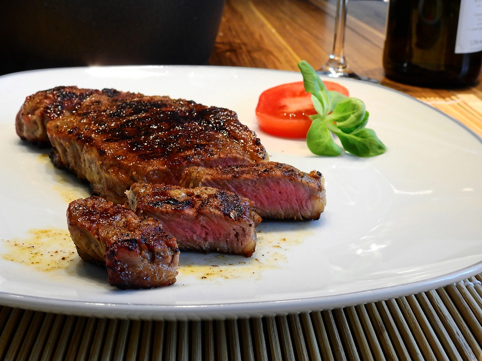

Jalapenos mixed with the other ingredients give a spicy and delicious kick to grilled steak.
A good meal after a long day at work is all what a man will need
Please remember to marinates this steak in the fridge for up to 24 hours before cooking.
Ingredients
- 4 jalapeno peppers, stemmed
- 4 cloves garlic, peeled
- 1½ teaspoons cracked black pepper
- 1 tablespoon coarse salt
- ¼ cup lime juice
- 1 tablespoon dried oregano
- 1½ pounds top sirloin steak
Steps Directions
- Combine jalapenos, garlic, pepper, salt, lime juice and oregano in a blender. Blend until smooth.
- Place steak in a shallow pan or large resealable plastic bag. Pour jalapeno marinade over the steak, and turn to coat. Cover pan or seal bag; marinate in the refrigerator 8 hours or overnight.
- Preheat an outdoor grill for high heat, and lightly oil the grill grate.
- Drain and discard marinade. Grill steak 5 minutes per side, or to desired doneness.
- Serve with a good red wine
Per Serving: 186 calories; protein 19.1g; carbohydrates 3.1g; fat 10.5g; cholesterol 60.5mg; sodium 1206mg.
Return to top
Return to HomePage